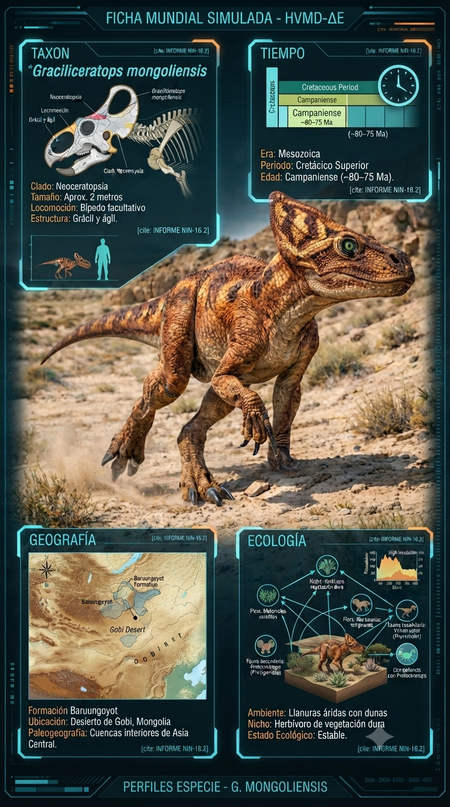
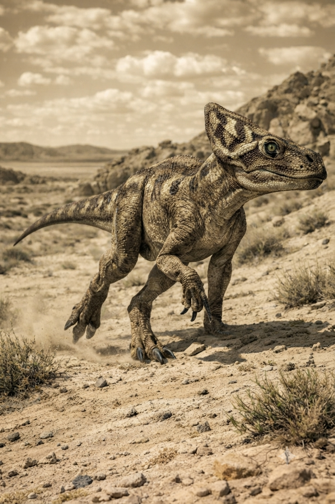
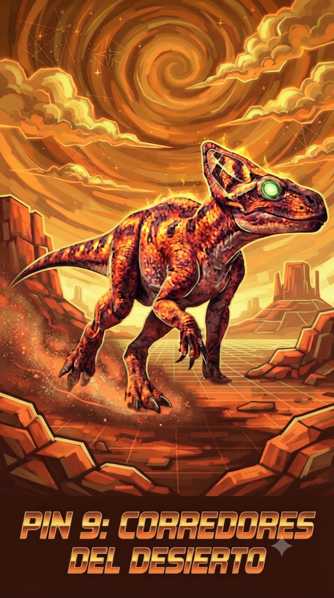

Paleoficha de Graciliceratops



Periodo: Cretácico Superior
Edad: Hace aproximadamente entre 80 y 75 millones de años.
Dieta: Herbívoro.
Distribución: Formación Baruungoyot, Desierto de Gobi (Mongolia).
TAXÓN:
Graciliceratops mongoliensis
CLADO: Neoceratopsia (dinosaurio herbívoro)
DIETA: Herbívoro (vegetación de bajo porte)
TAMAÑO: Aprox. 2 metros de longitud
LOCOMOCIÓN: Bípedo facultativo; estructura grácil y ágil
TIEMPO:
Cretácico Superior (Campaniense), aproximadamente entre 80 y 75 millones de años.
GEOGRAFÍA:
Formación Baruungoyot, Desierto de Gobi (Mongolia). Cuencas interiores de Asia Central con llanuras áridas, dunas de arena y oasis temporales.
ECOLOGÍA:
Flora dominada por matorrales xerófilos, plantas suculentas tempranas y vegetación de ribera efímera. Compartía el ecosistema con Protoceratops, Velociraptor y Tarchia. Ocupaba el nicho de pequeño herbívoro especializado en vegetación dura o espinosa, siendo presa frecuente de pequeños terópodos y compitiendo con Protoceratops por los recursos alimenticios.
CLIMA:
Wm1 (Árido). Condiciones de aridez extrema con elevada insolación.
ESTADO ECOLÓGICO:
Estable. Representa un linaje clave en la evolución de los neoceratopsios, manteniendo una constitución ligera a pesar de su afinidad con formas posteriores más robustas.
Vídeo PalEntropía:
▶ Ver Short en YouTube